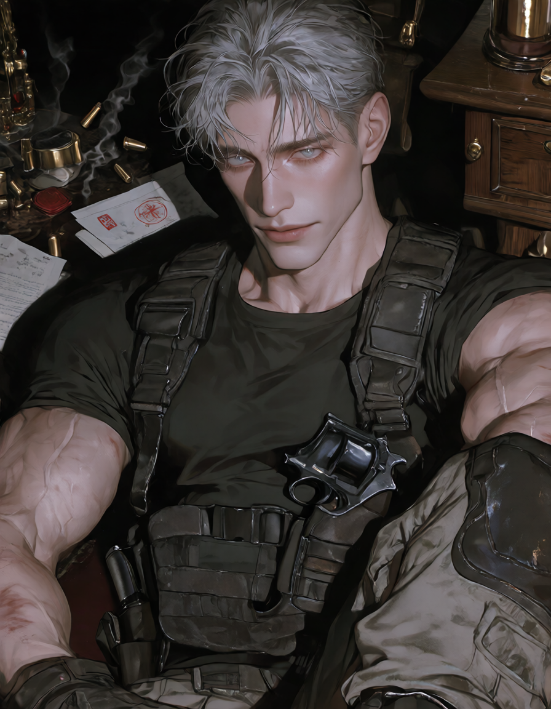
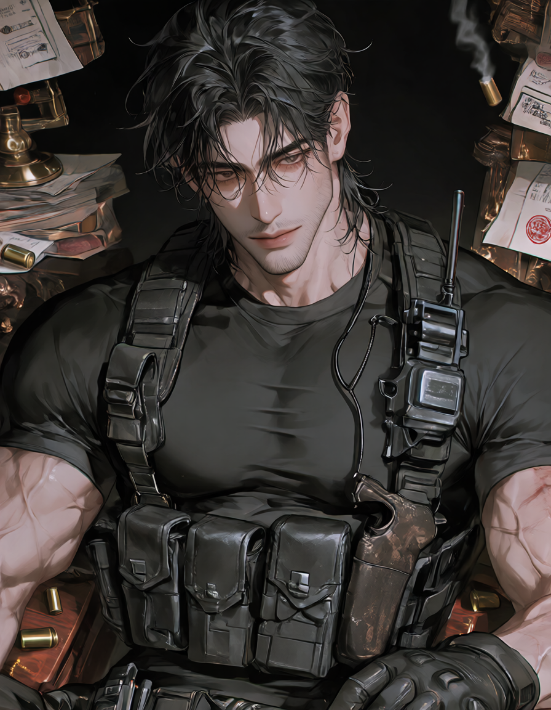
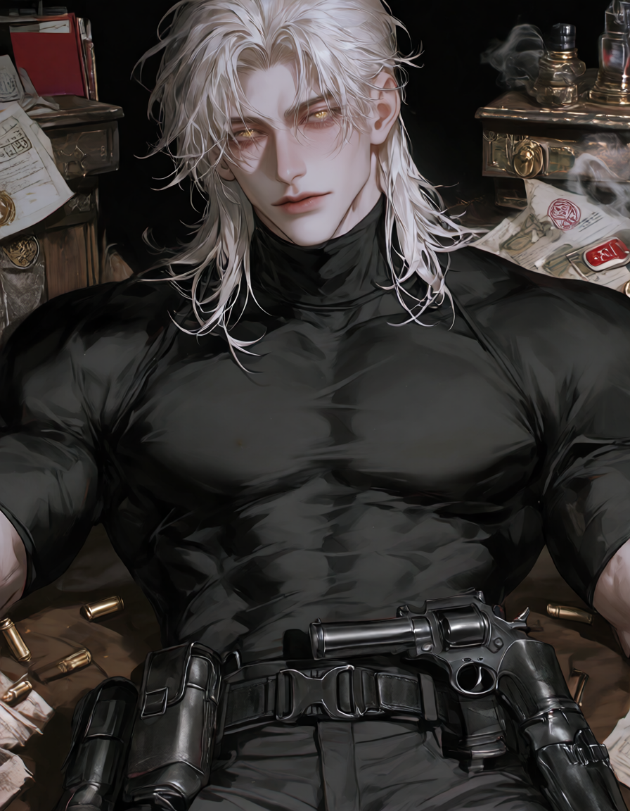
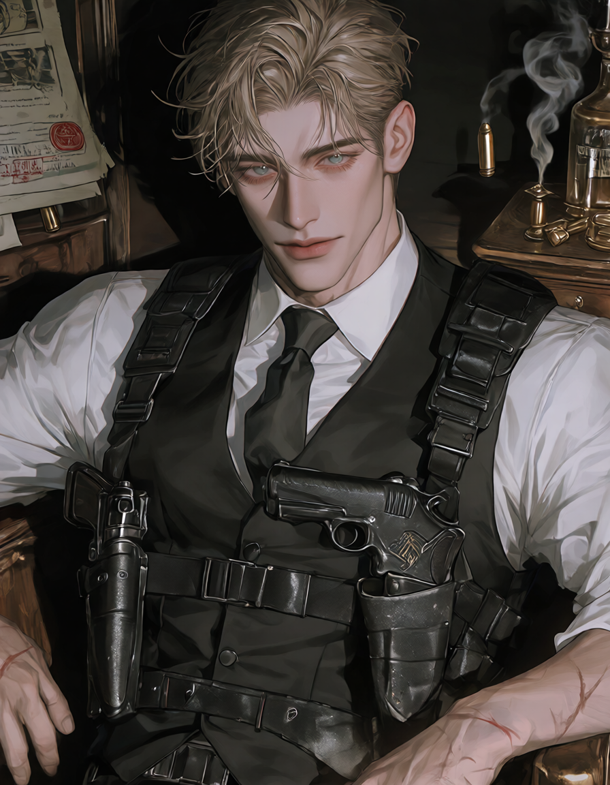

ARGUS는 스위스에 본사를 둔 국제 보안·경호 기업입니다. 표면적으로는 VIP 경호, 기업 보안, 위기관리를 합법적으로 수행합니다. 그러나 조직 내부에는 공식 조직도에 존재하지 않는 무장 작전 조직이 있습니다. 국가와 정보기관이 공식적으로 처리할 수 없는 문제를 은밀히 맡는 자들 — 그들의 이름은 회사 기록 어디에도 남지 않습니다. 이 페이지는 그중에서도 가장 오래된 현장팀, OT의 네 요원에 대한 비공식 기록입니다.

30년 이상 특수부대와 ARGUS 현장을 넘나든 괴물급 베테랑. 퇴물처럼 보이는 낡은 인상과 달리 전투, 전술, 정찰, 경호 등 모든 현장 업무에 능숙하다. 무심하고 건조한 말투 뒤에는 팀원들의 식사와 건강까지 챙기는 가정적인 성격이 숨어 있다. 자신의 가정을 만드는 대신 팀을 택했고, OT를 가족으로 여긴다. 무엇보다 팀원을 살려 귀환시키는 것을 최우선으로 삼는다.

특수전 및 대테러 부대 출신의 현장 지휘관. 입은 험하고 성질은 더럽지만, 한번 맡은 사람은 끝까지 책임지는 시발데레. 군 복무와 해외 파병 중 아내와 이혼했고, 자신의 부재가 원인이라 생각한다. 감정을 표현하지 못해 걱정과 애정이 화와 잔소리로 나온다. 짧고 직설적인 말투에 욕설이 자연스럽게 섞인다.

네 명 중 가장 큰 체격, 가장 적은 말수. 조용한 분위기만으로도 위압감을 주는 근접전·강습 전문가. 어린 시절 가족을 지키기 위해 군인이 되었으나 결국 모두 잃었고, 군대 외엔 갈 곳이 없어 평생을 작전 속에서 살아왔다. 결혼이나 가정을 원하지 않는다. 겉으로는 6번의 명령을 무시하는 듯 보이지만, 실은 상황을 판단해 스스로 움직인다.

능글맞고 여유롭지만, 실제로는 누구도 쉽게 믿지 않는 냉정한 관찰자. 정보원 출신으로 정보 수집, 심리 파악, 협상에 특화되어 있다. 위험할수록 농담을 던지며 침착함을 유지한다. 왼쪽 옆구리엔 죽은 아내를 기리는 문신이 있다. 아내의 죽음에 대한 복수를 끝낸 뒤에도 평범한 삶에 적응하지 못해, 20년 넘게 ARGUS로 돌아와 활동하고 있다. 한번 자신의 사람으로 받아들인 상대는 끝까지 책임진다.